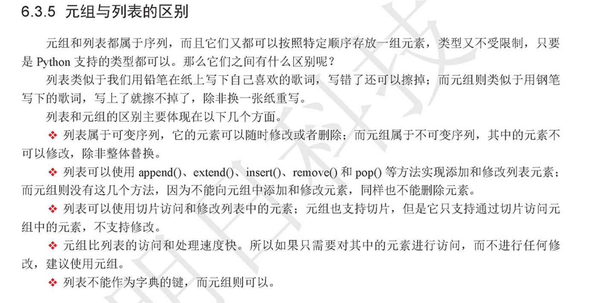

Contents
1.5. 元祖 Tuple¶
tuple()函数创建一个空元祖
代码示例
# 和列表操作很类似，但不可变
zoo = ('wolf', 'elephant', 'penguin')
# 元祖的小括号并不是必须的，只要将一组数用逗号分隔开来，python就可以认为它是元祖。
In [1]: tmp="aa","bb","cc"
In [2]: type(tmp)
Out[2]: tuple
# 元祖使用+号可以组合，类似列表
#!/usr/bin/env python
#-*- coding:utf8 -*-
# auther; 18793
# Date：2019/4/15 20:09
# filename: 元祖.py
play1=("梅西","C罗","卡卡西","胡歌")
print("原始的元祖：{}".format(play1))
play2=play1+("胡建力","小贱","胡小健")
print("组合后的元祖：{}".format(play2))
# 在元祖添加时，若只有1个元祖，需要在后面加上逗号
play3= play2+("路飞",)
print("添加元祖，当只有一个元素时，需要在后面加上逗号:{}".format(play3))
1.5.1. 1.元祖¶
1.1 元祖特性¶
不可变序列（不能添加、修改和删除元素，可以整体替换）
支持切片的操作（只能访问元祖中的元素）
元祖访问速度快
元祖可以作为字典的键
1.2 元祖(解包)¶
In [25]: marx_tuple = ("hu","jian","li")
In [27]: a,b,c = marx_tuple
In [28]: a
Out[28]: 'hu'
In [29]: b
Out[29]: 'jian'
In [30]: c
Out[30]: 'li'
可以利用元组在一条语句中对多个变量的值进行交换，而不需要借助临时变量
元组（tup）虽然与列表类似，但也有不同之处，元组的元素不能修改；元组使用小括号，而列表使用中括号。
1.3 zip()函数¶
list_a = [1,2,3,4]
list_b = ["a","b","c","d","e"]
for i in zip(list_a,list_b):
print(i)
(1, 'a')
(2, 'b')
(3, 'c')
(4, 'd')
list_a = ["hu1","hu2","hu3","hu4"]
list_b = ("python1","python2","python3")
for i in zip(list_a,list_b):
print(i)
('hu1', 'python1')
('hu2', 'python2')
('hu3', 'python3')
1.4 列表和元祖的区别¶
可变序列
(随时可以添加修改或者删除)
支持切片操作
（可以访问、修改列表总的元素）
列表访问速度慢
不能作为字典的键
1.5.2. 2.具名元祖¶
具名元组在保留普通元组功能的基础上，允许为元组的每个成员命名，这样你便能通过名称而不止是数字索引访问成员。
在Python 3.6版本以后，除了使用namedtuple()函数以外，你还可以用typing.NamedTuple和类型注解语法来定义具名元组类型。这种方式在可读性上更胜一筹：
from collections import namedtuple
Rectangle = namedtuple('Rectangle', 'width,height')
from typing import NamedTuple
class Rectangle1(NamedTuple):
width: int
height: int
# rect = rectangle(100, 20)
rect = Rectangle(width=100, height=20)
# 可以像普通元组一样，通过数字索引访问成员
print(rect[0])
# 也能通过字段名称来访问
print(rect.width)
print(rect.height)
rect_str = Rectangle('string', 'not_a_number')